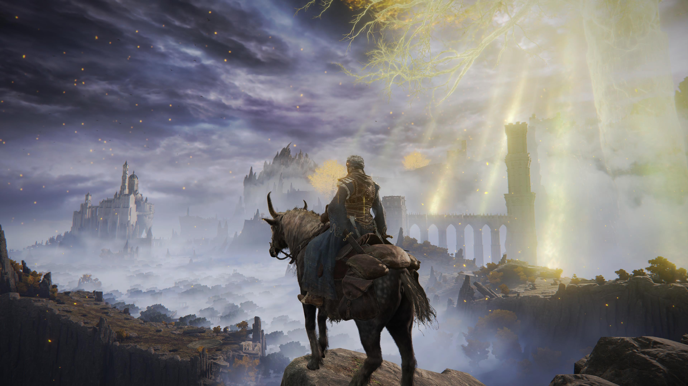

This website presents the development of a JavaScript game using Babylon.js. Each section demonstrates a different technical element of 3D game development.
Core mechanics and basic interaction.
Environment design and logic systems.

Advanced player control and scene switching.